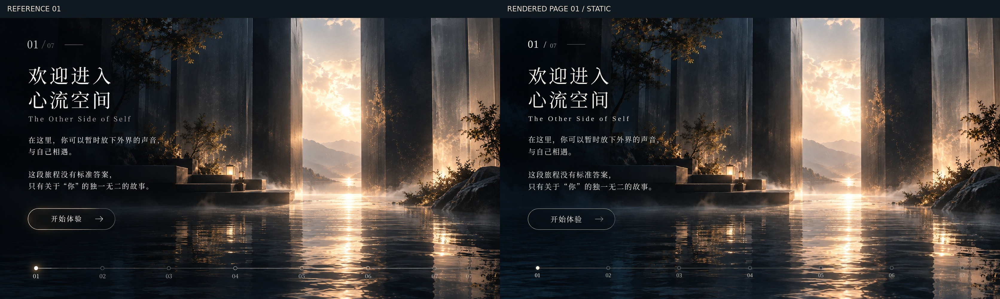

打开静态首页 →Page 01 · 静态参考还原
仅修改首页。背景经图像修复移除了参考图中烘焙的文字、按钮与进度线；页面文字、按钮、七阶段进度均由 HTML/CSS 实现。参考图左，实际网页右。

1920×1080 实际页面

检查尺寸：1672×941、1920×1080、1440×900、1366×768、390×844。首页没有动态 Canvas、持续 requestAnimationFrame 或运行中的 CSS 动画；空闲截图像素一致。Pages 2–7 的现有流程回归通过。
剩余差异：字体字形和图像修复区域有细微差别；原图进度线重复的 07 节点已按正式需求修正为七个节点。窄屏按可读性调整背景裁切。
自动化检查结果 JSON